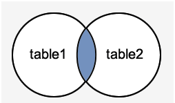
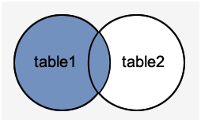
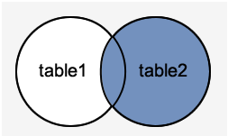
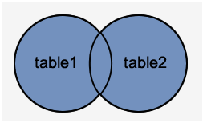

Oracle Cheat Sheet
The most common-used commands of Oracle databse.
What is Oracle databse?
Oracle Database allows you to quickly and safely create, maintain and retrieve data. It is a relational database system developed
by Oracle Corporation in 1980. It is cross-platform i.e it can run on various hardware across operating systems.
It has its networking stack that allows application from a different platform to communicate.
It is a relational database in which data is accessed by user through query language called SQL.
Oracle database has several structural features like Logical data structure, Memory caching, Backup and recovery, Clustering
etc. that make it popular.
To know more about Oracle database Click Here
Basic Queries:-
1) CREATE TABLE - The create table statement is used to create a new table in the database..
Syntax:- create table table_name(col1_name data_type,col2_name data_type,..,colN_name data_type);
2) SELECT - The select statement is used to fetch records from database.
Syntax:- SELECT * FROM table_name;
3) INSERT - The insert statement is used to insert records into table.
Syntax:- INSERT into table_name values(value1, value2,.., valuen);
4) UPDATE - The update statement is used to update records of a table.
Syntax:- UPDATE table_name set col1_name="exp1", col2_name="exp2" WHERE [condition]
5) WHERE - The where statement is used to filter the records of a table.
Syntax:- SELECT * FROM table_name where col_name=value;
6) DELETE - The delete statement is used to delete the records of a table from database.
Syntax:- DELETE FROM table_name WHERE col_name=value;
7) TRUNCATE - The truncate statement is used to remove records of a table.
Syntax:- TRUNCATE table table_name;
8) DROP - The truncate statement is used to drop a table.
Syntax:- DROP table table_name;
9) DISTINCT - The Distinct clause is used to remove the duplicate records from the result set.
Syntax:- SELECT DISTINCT expression FROM table_name WHERE condition
10) GROUP BY - The Group By clause is used with SELECT statement to collect data from multiple records and group the results by one or more columns.
Syntax:- SELECT col_name FROM table_name WHERE condition GROUP BY col_name(s);
11) ORDER BY - The Order By clause is used to sort the records in result set
Syntax:- select * FROM table_name WHERE condition ORDER BY expression [ASC|DESC];
12) VIEW - It is basically a virtual table which is stored in Oracle data dictionary.
Syntax:- CREATE VIEW view_name AS SELECT col_1,col_2...col_n FROM table_name WHERE condition
13) UNION - The UNION operator is used to combine the result sets of two or more Oracle SELECT statements.
Syntax:- SELECT exp_1,..exp_n FROM table_1 WHERE condition UNION SELECT exp_1,..exp_n FROM table_2 WHERE condition;
Note:- Each SELECT statement within the UNION operator must have the same number of fields in the result sets with similar data types
14) INTERSECT - The INTERSECT operator is used to pick the common records from compound SELECT queries.
Syntax:- SELECT exp_1,..exp_n FROM table_1 WHERE condition INTERSECT SELECT exp_1,..exp_n FROM table_2 WHERE condition;
ORACLE JOINS
Join statement is used to combine data or rows from two or more tables based on a common field between them.Different types of Joins are:
1) INNER JOIN - The INNER JOIN returns all rows from multiple tables where the join condition is met.

Syntax:- SELECT col_1,..col_n from table_1 INNER JOIN ON table_1.col=table2.col
2) LEFT OUTER JOIN - The LEFT OUTER JOIN returns all the rows of the table on the left side of the join and matching rows for the table on the right side of join.

Syntax:- SELECT table1.col1, table1.col2, table2.col1,… FROM table1 LEFT JOIN table2 ON condition;
3) RIGHT OUTER JOIN - The RIGHT OUTER JOIN returns all the rows of the table on the right side of the join and matching rows for the table on the left side of join.

Syntax:- SELECT table1.col1, table1.col2, table2.col1,… FROM table1 LEFT JOIN table2 ON condition;
4) FULL OUTER JOIN - The FULL OUTER JOIN returns all rows from the left hand table and right hand table.

Syntax:- SELECT table1.col1, table1.col2, table2.col1,… FROM table1 FULL JOIN table2 ON condition;
Feel Free to Connect with me on Linkedin
Thank you! Happy Learning 😀